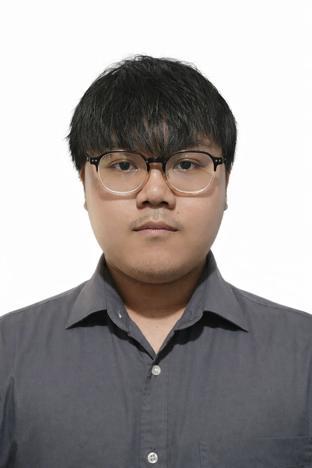
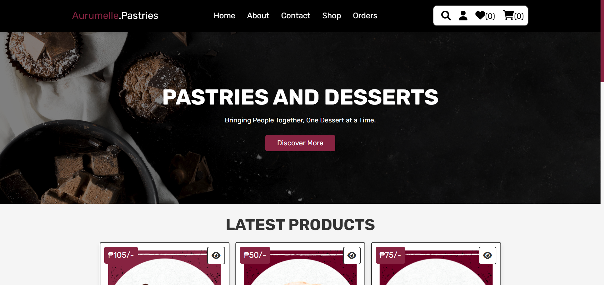
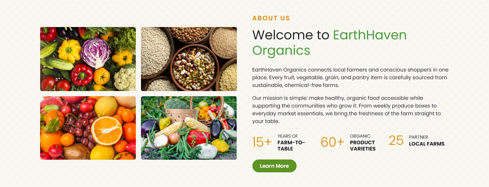

Start with people.
Get clear on the purpose, the audience, and what the interface needs to help them do.
Frontend developer · UI designer
I’m Marc Canlas. I turn ideas into thoughtful digital experiences—with an eye for design and a feel for the details.

01 / Selected work
A collection of web experiences.
Different challenges. The same attention to detail.

01 / Marketplace · Angular
Connecting Kapampangan farmers directly with buyers.

02 / E-commerce · PHP & MySQL
A considered shopping experience for a pastry brand.

03 / Photography · WordPress
A visual home for a photography brand and its work.

04 / Brand experience · HTML & CSS
Bringing a café’s character into a digital space.

05 / Product catalog · Angular
A clean, approachable interface for organic products.

06 / Publishing · WordPress
A place for food discoveries and stories worth sharing.

07 / Brand experience · HTML & CSS
A distinctive web presence with a focus on brand identity.
02 / A little about me
I enjoy the space between how something looks and how it works.
I’m a frontend developer and Information Technology student from Angeles City, Philippines. I build responsive web interfaces and explore how thoughtful UI design can make everyday interactions feel easier.
My focus is HTML, CSS, JavaScript, and Angular. Along the way, I’m growing my understanding of full web application workflows through PHP, Vue.js, and backend integration.
More about my journeyHTML5 · CSS3 · JavaScript
Angular · Vue.js · PHP
Figma · Responsive design
Git / GitHub · WordPress
03 / My approach
From the first sketch to the final interaction,
I care about the whole experience.
Get clear on the purpose, the audience, and what the interface needs to help them do.
Explore hierarchy, layout, and visual direction. Refine the details with the user journey in mind.
Turn the design into a responsive interface, then check the interactions and refine across screens.
04 / Notes from the process
05 / Let’s make something good
Have a role, a project, or a conversation in mind?
I’d love to hear from you.